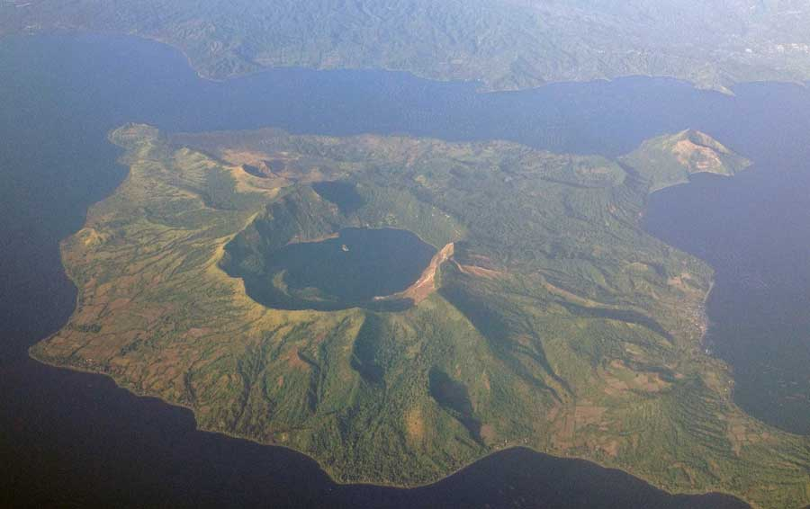
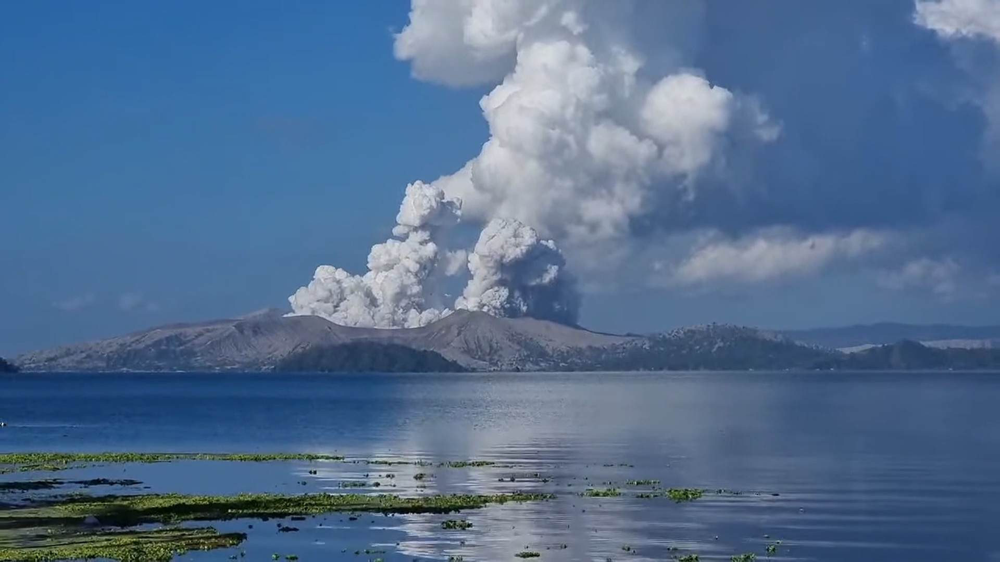
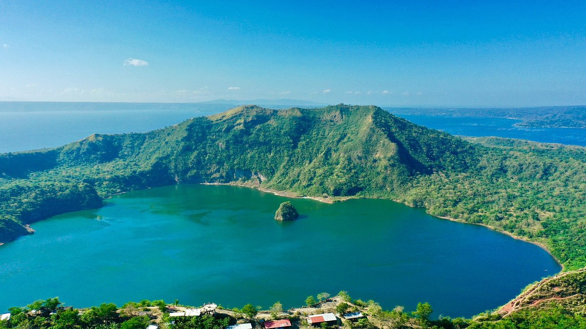

Taal Volcano is a picturesque and geologically unique caldera volcano located in Batangas, Philippines, approximately 50 kilometers south of Manila. Rising to an elevation of about 311 meters (1,020 feet) above sea level, it is one of the most active volcanoes in the country and forms part of the Luzon Volcanic Arc. What makes Taal especially remarkable is its setting—a volcano within Volcano Island, which itself sits inside Taal Lake, creating a rare “volcano within a lake within a volcano” formation. Known for its dramatic landscape and frequent activity, Taal has recorded dozens of eruptions throughout history, drawing both scientists and tourists to witness its dynamic beauty and explore its crater trails and surrounding lake views.

This volcano is one of the most active volcanoes in the Philippines, has erupted 34 times since 1572, with major events in 1754, 1911, 1965, 2020, and most recently in October 2025. The latest eruption involved phreatic and phreatomagmatic activity, producing a 2.5 km ash column and triggering dozens of volcanic earthquakes. As of November 2025, PHIVOLCS maintains Alert Level 2, indicating moderate unrest, and continues to monitor seismic activity, gas emissions, and ground deformation. Residents and visitors are advised to avoid Volcano Island and the Main Crater due to the risk of sudden hazardous eruptions.

Exploring Taal Volcano offers breathtaking views and rich natural experiences, best enjoyed from safe vantage points like Tagaytay Ridge, People’s Park in the Sky, and Sky Ranch. While hiking to the crater and lake tours were once popular, access to Volcano Island is now restricted due to ongoing volcanic activity. Visitors are advised to check PHIVOLCS alerts before traveling, wear protective gear during ashfall, and follow local safety guidelines. Scenic photography, birdwatching, and guided tours around Taal Lake remain safe and rewarding ways to experience this iconic landmark.
One popular legend from Batangas recounts the origin of Taal Lake as a divine punishment. Long ago, the area was said to be a prosperous valley where people grew arrogant and neglected their spiritual duties. In response, the gods unleashed a fiery eruption that flooded the valley, forming the lake and leaving only the volcano visible above water—a reminder of nature’s power and divine justice.
Another tale speaks of a princess named Taalita, who received a magical ring from her father, King Balindo. While boating on the lake, she accidentally dropped the ring into the water. The king ordered his soldiers to retrieve it, but the lake responded with violent tremors and eventually formed the volcano at its center. This story symbolizes the lake’s mystical guardianship and the belief that it reacts to human emotion and disturbance.
There’s also a myth involving two lovers from rival villages whose forbidden romance ended in tragedy. Their sorrow was said to have stirred the volcano’s fury, leading to an eruption that reshaped the land and created the lake. Locals interpret this as a tale of love, loss, and the emotional force of nature.